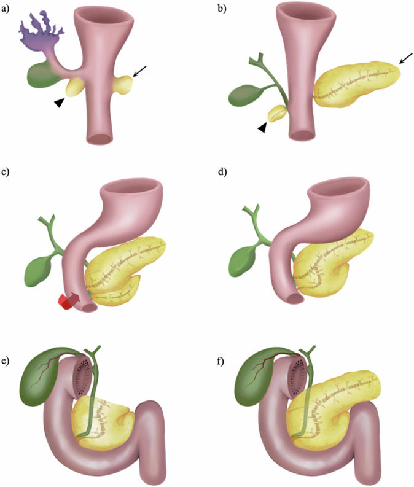
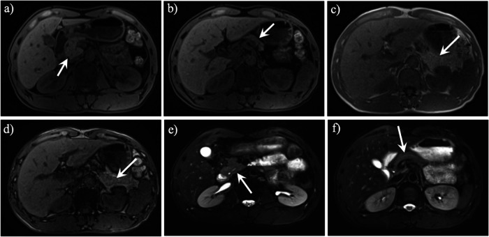
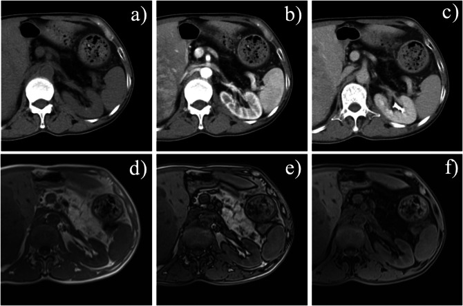
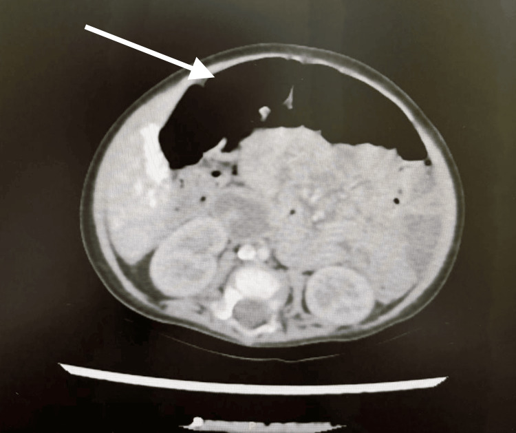

6172 — Bất sản/giảm sản tụy bẩm sinh và thiếu lipase đơn thuần: "tụy biến mất" ở trẻ / Congenital pancreatic agenesis–hypoplasia and isolated lipase deficiency
Tags: pattern:khong-thay-tuy pattern:mo-thay-tuy pattern:teo-tuy pattern:suy-tuy-ngoai-tiet vung:tuy protocol:MRI-tuy protocol:MRCP protocol:SAT-tre score:elastase-1
Mức chắc chắn (certainty): tổng hợp y văn (literature synthesis) — số liệu từ tổng quan "vanishing pancreas" 2025 (PMC12228938, CC BY 4.0), ca bất sản tụy toàn bộ do ZNF808 (PMC12698496, CC BY), đoàn hệ 19 người mang biến thể PDX1 (PMC11575358, CC BY) và 6 trẻ Amish thiếu lipase tụy bẩm sinh do PNLIP (PMC12475842, CC BY). Nhóm không có bệnh nhân của mình.
Câu chốt: "không thấy tụy" trên hình ảnh chỉ có ba nguyên nhân, và chỉ một trong ba là bẩm sinh mất mô: (1) bất sản mầm tụy lưng (chỉ còn đầu–móc, cắt ngang ở bờ SMA); (2) tụy bị mỡ thay/thâm nhiễm (xơ nang, Shwachman–Diamond, Johanson–Blizzard — mật độ mỡ nhưng ống tụy còn); (3) teo do viêm tụy mạn (tụy mảnh như sợi chỉ + ống giãn/vôi). Ngoài ra, thiếu lipase đơn thuần (PNLIP/CEL) là hình ảnh hoàn toàn bình thường — chẩn đoán bằng elastase-1 phân và gen. Bốn số phải thuộc: bất sản tụy toàn bộ < 50 ca đã công bố; bất sản mầm lưng MỘT PHẦN ~100 ca; elastase-1 < 200 µg/g = suy tụy ngoại tiết (ca bất sản toàn bộ thường < 50 µg/g); trẻ PDX1 có cân nặng lúc sinh trung vị z = −3,09 và đái tháo đường khởi phát trung vị 20 ngày tuổi.
1. Tổng quan bệnh học – cơ chế hình ảnh
1.1 Phôi thai học: vì sao thiếu chính xác phần thân–đuôi
- Hai mầm tụy: vào cuối tuần thứ 4 phôi thai, mầm tụy bụng (ventral bud) mọc từ túi gan và mầm tụy lưng (dorsal bud) mọc từ mạc treo lưng (PMC12228938). Mầm bụng xoay ra sau tá tràng rồi hòa với mầm lưng ở tuần 6–7.
- Định mệnh giải phẫu: mầm bụng → đầu dưới + móc (uncinate process); mầm lưng → đầu trên, eo, thân, đuôi và nhú tá tràng nhỏ (minor papilla) + ống tụy phụ (duct of Santorini).
- Hệ quả: mầm lưng không phát triển → mất thân–đuôi; mầm bụng vẫn còn → chỉ thấy đầu và móc, tức "tụy một nửa" (partial dorsal agenesis). Mất cả hai mầm → bất sản toàn bộ (complete agenesis), hiếm và nặng nhất.
- TẠI SAO trẻ bất sản toàn bộ lại nhỏ so với tuổi thai: insulin là yếu tố tăng trưởng thai chính; không có tụy nội tiết → chậm tăng trưởng trong tử cung. Đoàn hệ PDX1: 17/17 trẻ có số liệu đều nhỏ so với tuổi thai, trung vị z = −3,09 (khoảng −4,51 đến −1,65) (PMC11575358).
- TẠI SAO thiếu lipase đơn thuần không biểu hiện ở sơ sinh: PNLIP (lipase triglyceride tụy) rất thấp lúc mới sinh; CEL (carboxyl ester lipase) trong sữa mẹ và PNLIPRP2 bù trừ. Vì vậy bệnh khởi phát muộn ở cuối năm đầu khi trẻ chuyển sang ăn đặc — đúng mô tả của thể PNLIP (OMIM #614338) (PMC12475842).
1.2 Vì sao hình ảnh thấy "tụy biến mất" — vật lý của mỡ, nước và protein
- CT: tụy bình thường 30–40 HU chưa cản quang (mô đặc, nhiều protein enzym); mỡ −40 đến −120 HU. Khi nhu mô bị mỡ thay, vùng tụy trùng mật độ mỡ sau phúc mạc → mắt thường đọc là "không có tụy".
- MRI T1 không bão hòa mỡ: tụy bình thường tăng tín hiệu do protein trong tế bào nang (nước liên kết protein → T1 ngắn); mỡ cũng sáng trên T1 thường. Vì vậy T1 fat-sat mới phân biệt: tụy thật vẫn sáng, mỡ tối (PMC12228938).
- MRI in-phase/out-of-phase (chemical shift): mỡ vi thể trong nhu mô → mất tín hiệu ở out-of-phase; đây là dấu khách quan của mỡ nội tụy (intra-pancreatic fat deposition, IPFD), không phải mất mô (PMC12228938).
- MRCP: mầm lưng mất → ống tụy chính ở thân–đuôi không hiện; ống tụy phụ cũng mất. Ngược lại, trong IPFD ống tụy vẫn còn — đây là chốt phân biệt quan trọng nhất (PMC12228938).
- TẠI SAO "mất mô" chứ không phải "teo": trong bất sản, không có ống tụy trong vùng vắng mô và không có mô xơ thay thế; trong teo do viêm mạn, ống còn nhưng giãn, gấp khúc và có vôi hóa (PMC12228938).
1.3 Các con số quyết định
- Bất sản mầm lưng: thể một phần ~100 ca đã báo cáo; đa số không triệu chứng, đái tháo đường gặp ở thể toàn bộ (PMC12228938).
- Bất sản tụy toàn bộ: < 50 ca xác nhận trên toàn thế giới, mô tả từ thập niên 1960 (PMC12698496).
- Mỡ nội tụy (IPFD): tỷ lệ 16–35% dân số trưởng thành; là cơ chế "tụy biến mất" phổ biến nhất (PMC12228938).
- Xơ nang (CF): ~80% bệnh nhân có suy tụy ngoại tiết (PMC12228938).
- Shwachman–Diamond (SDS): giảm bạch cầu trung tính + mỡ thay tụy + loạn sản sụn–xương (metaphyseal dysplasia).
- Johanson–Blizzard (JBS): đột biến UBR1, bất sản/giảm sản cánh mũi + suy tụy ngoại tiết bẩm sinh.
- MODY8: đột biến CEL — vừa suy ngoại tiết vừa đái tháo đường (nối trực tiếp với nhóm thiếu lipase).
- PDX1 (đoàn hệ 19 người): đái tháo đường vĩnh viễn 100%, chẩn đoán trung vị 20 ngày tuổi (1–181 ngày), insulin 0,93 U/kg/ngày (0,2–2,5); 63,2% có bất thường ngoài tụy, 42% bất thường tá tràng/gan–mật; 3/19 tử vong < 1 tuổi** (PMC11575358). Lưu ý **2/3 anh chị em cùng gia đình có elastase bình thường (> 200 µg/g) — tức bất sản không luôn kèm suy ngoại tiết.
- Bất sản toàn bộ (ca ZNF808): sinh 38 tuần, 1,3 kg (< bách phân vị 3), **elastase phân < 50 µg/g** (bình thường > 200), đái tháo đường sơ sinh cần insulin (PMC12698496).
2. Mẫu hình + chẩn đoán phân biệt theo hình thái (gamut)
Mẫu hình cần nhận: trẻ nhỏ chậm tăng trưởng + phân mỡ (steatorrhea) + đường huyết cao hoặc hạ đường huyết, hình ảnh không thấy tụy một phần/toàn bộ hoặc tụy mật độ mỡ.
- Chỉ còn đầu–móc, cắt ở bờ SMA → bất sản mầm lưng (một phần hoặc toàn bộ); tìm đa lách (polysplenia), situs inversus, bất thường mạch, u/túi giả tụy đi kèm (PMC12228938).
- Toàn bộ vùng tụy là mỡ, ống tụy còn → IPFD: xơ nang, SDS, JBS, MODY8, béo phì/chuyển hóa; ở trẻ còn phải loại teo do suy dinh dưỡng nặng.
- Tụy mảnh như sợi chỉ + ống giãn/vôi hóa → viêm tụy mạn (khác hoàn toàn bẩm sinh; thường đau tái diễn).
- Không thấy tụy + sẹo mổ/kẹp phẫu thuật → sau cắt tụy (Whipple, cắt đuôi); đọc sai thành bẩm sinh nếu không hỏi tiền sử.
- Tụy bình thường trên hình ảnh nhưng phân mỡ → thiếu enzym đơn thuần (PNLIP, CEL) hoặc suy tụy ngoại tiết "chức năng"; đây là nhóm không chẩn đoán được bằng hình ảnh.
- Tụy to, không đồng nhất, đường huyết cao ở trẻ → nghĩ viêm tụy cấp hoặc tụy chủ mô, không phải bất sản.

Hình 1 của tổng quan: mầm bụng (đầu mũi nhọn) và mầm lưng (mũi tên) hợp nhất; (e) mất hoàn toàn thân–đuôi; (f) mất một phần. Nguồn: Qin Y et al, Insights Imaging 2025 (PMC12228938), CC BY 4.0.3. Bảng so sánh phân biệt (ma trận đối chiếu)
| Thực thể (entity) | Hình ảnh điển hình | Chốt vào (rule-in) | Chốt loại (rule-out) | Gợi ý xác nhận |
|---|---|---|---|---|
| Bất sản mầm tụy lưng (một phần) | MRI/CT: chỉ đầu + móc dừng ở bờ SMA, thân–đuôi vắng; không ống tụy ở vùng vắng; vùng đó là mỡ | Cấu hình "tụy bụng đơn độc" cắt ngang bờ SMA, mất mẫu ống "xương cá" | Ống tụy còn chạy trong vùng mỡ → IPFD, không phải bất sản | MRI T1 fat-sat + MRCP; tìm đa lách/situs |
| Bất sản tụy toàn bộ | Không thấy nhu mô tụy ở bất kỳ lát nào; túi mật/tá tràng bình thường | Đái tháo đường sơ sinh + elastase < 50 µg/g + không thấy tụy | Có đầu tụy → bất sản một phần | Gen PDX1/PTF1A/GATA6/ZNF808/CNOT1 |
| Mỡ nội tụy / CF / SDS / JBS | Tụy mật độ mỡ, ống tụy CÒN; in/out-phase mất tín hiệu; CF có giãn phế quản, SDS có loạn sản sùn | Mỡ nội tụy + ống còn + elastase thấp | Mất ống + cắt ở SMA → bất sản | Mồ hôi (CF), công thức máu (SDS), gen UBR1 (JBS) |
| Teo do viêm tụy mạn | Tụy mảnh như sợi chỉ, ống giãn/gấp khúc, vôi hóa, túi giả | Vôi hóa + ống giãn + đau tái diễn | Ống bình thường, không vôi → không phải viêm mạn | MRCP; CA19-9 nếu nghi ung thư |
| Thiếu lipase đơn thuần (PNLIP) | Tụy bình thường về kích thước, mật độ, ống | Phân mỡ + elastase thấp + hình ảnh bình thường | Có bất thường cấu trúc → không phải thể đơn thuần | Gen PNLIP/CEL, vitamin tan mỡ |
| Sau cắt tụy | Mất phần tụy theo giải phẫu mổ, có kẹp/anastomosis | Tiền sử mổ + mất mô theo vùng | Mất mô không theo vùng mổ → bẩm sinh | Hỏi tiền sử, so phim cũ |

Hình 2: (a,b) T1 fat-sat — đầu/eo còn; (c,d) in/out-phase — vùng thân–đuôi là mỡ; (e,f) T2 — chỉ thấy ống tụy ở đầu/eo, ống đuôi mất. Nguồn: Qin Y et al (PMC12228938), CC BY 4.0.4. Protocol chụp + xét nghiệm + phân độ
4.1 Siêu âm (đầu tay ở trẻ)
- Nhịn ăn 3–4 giờ, đầu dò linear tần số cao, lát ngang thượng vị qua động mạch chủ → SMA → tĩnh mạch lách.
- Bẫy sinh lý: tụy sơ sinh tăng âm hơn gan và rất mảnh — không được gọi "mỡ thay" chỉ vì tụy sáng; và hơi ruột có thể che hoàn toàn thân–đuôi → "không thấy" trên siêu âm không phải "không có".
- Đo: bề dày đầu/eo, sự hiện diện ống tụy chính (đường echo dày 1–2 mm trong thân tụy), và đuôi tụy trước lách.
4.2 MRI/CT (khi siêu âm không kết luận)
- MRI 3T, nhịn ăn 4 giờ: T1 3D fat-sat (nhu mô tụy sáng), T2, in-phase/out-of-phase (mỡ vi thể), DWI, MRCP (ống chính + ống phụ) (PMC12228938).
- CT: chưa cản quang + thì tĩnh mạch cửa, lát ≤ 2 mm; đo HU vùng tụy để chứng minh mật độ mỡ; tìm đa lách, situs inversus, bất thường mạch, và u/túi giả đi kèm.
- Ba dấu chốt của bất sản mầm lưng: (1) cấu hình tụy bụng đơn độc dừng ở bờ SMA; (2) không nhu mô lưng ngoài mặt phẳng SMA; (3) mất mẫu ống "xương cá" (herringbone) (PMC12228938).
4.3 Xét nghiệm
- Elastase-1 phân: < 200 µg/g = suy tụy ngoại tiết; < 100 µg/g = nặng; ca bất sản toàn bộ thường < 50 µg/g. Elastase là enzym người, PERT không làm sai kết quả (chi tiết ở bài 6168).
- Loại trừ xơ nang: mồ hôi (sweat chloride) hoặc gen CFTR — bắt buộc trước khi kết luận "bẩm sinh không do CF".
- Vitamin tan mỡ A/D/E/K + INR, albumin, kẽm; cân nặng/chiều cao theo tuổi.
- Đái tháo đường sơ sinh: glucose, HbA1c, C-peptide; panel gen NDM (PDX1, PTF1A, GATA6, ZNF808, CNOT1, HNF1B, INS, KCNJ11, ABCC8).
- Không có "điểm phân độ" cho bất sản tụy — mô tả một phần vs toàn bộ là đủ cho quyết định điều trị; phân độ nặng dựa vào elastase + tăng trưởng + đường huyết.
4.4 Điều trị (khung)
- PERT suốt đời (chi tiết liều theo bài 6168): chỉnh theo phân, cân nặng, vitamin tan mỡ, không theo con số elastase.
- Insulin cho đái tháo đường sơ sinh; theo dõi hạ đường huyết khi trẻ nhỏ.
- Bổ sung vitamin tan mỡ, theo dõi tăng trưởng và phát triển thần kinh.
- Tầm soát đi kèm: siêu âm tim (GATA6), thận–tiết niệu, cột sống, và đa lách/situs khi có bất sản mầm lưng.
flowchart TD
A[Không thấy tụy hoặc tụy mật độ mỡ] --> B{Ống tụy chính còn trong vùng bất thường?}
B -->|Còn| C[Mỡ nội tụy: xơ nang, SDS, JBS, MODY8, béo phì]
B -->|Mất| D{Vùng mất có cắt ngang bờ SMA?}
D -->|Có| E[Bất sản mầm tụy lưng một phần hoặc toàn bộ]
D -->|Không| F{Tiền sử mổ hoặc vôi hóa và ống giãn?}
F -->|Mổ| G[Sau cắt tụy]
F -->|Vôi hóa| H[Teo do viêm tụy mạn]
E --> I[Elastase-1, đường huyết, panel gen NDM]
C --> J[Elastase-1, mồ hôi, công thức máu]
I --> K[PERT + insulin nếu đái tháo đường]
J --> K
5. Biến thể bình thường và cạm bẫy
- Tụy sơ sinh "sáng" là bình thường: nhu mô tụy ở trẻ nhỏ tăng âm hơn gan do ít mỡ và nhiều mô đặc; gọi "mỡ thay toàn bộ" ở sơ sinh là overcall.
- Hơi ruột che thân–đuôi trên siêu âm → tưởng bất sản; cho nhịn ăn và đổi tư thế, hoặc chuyển MRI.
- Bất sản mầm lưng + đa lách: luôn đếm lách và tìm situs inversus — bỏ sót làm mất thông tin tiên lượng và phẫu thuật (PMC12228938).
- Tụy mỡ nhưng elastase bình thường (người lớn béo phì, MASLD): không mở PERT dài hạn chỉ vì hình ảnh.
- Bất sản một phần không luôn kèm suy ngoại tiết: trong đoàn hệ PDX1, 2/3 anh chị em có elastase > 200 µg/g — hình ảnh và enzym không đồng hành tuyệt đối (PMC11575358).
- Giả u/túi giả: bất sản mầm lưng có thể kèm túi giả tụy hoặc u thực thể; khối không ngấm thuốc cạnh vùng vắng tụy dễ bị đọc là "tụy lạc chỗ" (PMC12228938).
- CA19-9 không dùng để chẩn đoán bất sản: ngưỡng > 40 U/mL chỉ có giá trị phân biệt viêm tụy mạn vs ung thư (độ đặc hiệu 90%, độ nhạy 81%) (PMC12228938).

Hình 9: mỡ nội tụy ở bệnh nhân 50 tuổi — ống tụy vẫn hiện, khác bất sản mầm lưng. Nguồn: Qin Y et al (PMC12228938), CC BY 4.0.
Ca bất sản toàn bộ do ZNF808: CT lúc 7 tháng tuổi không thấy tụy; trẻ có đái tháo đường sơ sinh và elastase < 50 µg/g. Nguồn: Alshareef F et al, Cureus 2025 (PMC12698496), CC BY 4.0.6. Tự lượng giá — Blind Quiz
Ca 1 — Bé trai sinh 38 tuần, 1,3 kg, hạ đường huyết ngày 3, phân mỡ khi bắt đầu ăn đặc.
- Hỏi: hình ảnh gợi ý gì? Hai xét nghiệm chốt? Chẩn đoán phân biệt với CF?
Bấm để hiện đáp án
- Bất sản tụy toàn bộ: không thấy nhu mô tụy ở mọi lát; trẻ nhỏ so với tuổi thai vì thiếu insulin.
- Elastase-1 phân < 50 µg/g + panel gen NDM (PDX1/PTF1A/GATA6/ZNF808) là hai xét nghiệm chốt; thêm siêu âm tim (GATA6).
- CF loại bằng mồ hôi bình thường và hình ảnh tụy có mô/mỡ nhưng ống còn, không "mất toàn bộ".
- Nguồn ảnh: Alshareef F et al (PMC12698496), CC BY 4.0.
Ca 2 — Nam 48 tuổi, đau bụng mơ hồ, MRI thấy chỉ đầu/eo tụy, thân–đuôi là mỡ.
- Hỏi: ba dấu hiệu chốt bất sản mầm lưng? Cần tìm gì đi kèm? Vì sao không gọi là "teo tụy"?
Bấm để hiện đáp án
- Ba dấu: cấu hình tụy bụng đơn độc dừng ở bờ SMA, không nhu mô ngoài mặt phẳng SMA, mất mẫu ống xương cá; MRCP không thấy ống thân–đuôi.
- Tìm đa lách, situs inversus, bất thường mạch, túi giả/u — bất sản mầm lưng hay đi kèm polysplenia.
- Không gọi teo vì teo do viêm mạn còn ống giãn + vôi hóa; ở đây ống mất hẳn và không có vôi.
- Nguồn ảnh: Qin Y et al (PMC12228938), CC BY 4.0.
Ca 3 — Trẻ 14 tháng, phân mỡ, chậm tăng trưởng; siêu âm và MRI tụy bình thường; elastase 60 µg/g.
- Hỏi: hình ảnh bình thường loại trừ được gì? Chẩn đoán nào còn lại? Xét nghiệm nào chốt?
Bấm để hiện đáp án
- Hình ảnh bình thường loại trừ bất sản/teo/mỡ thay, không loại trừ thiếu enzym.
- Nghĩ thiếu lipase tụy bẩm sinh (PNLIP, OMIM #614338) hoặc CEL/MODY8 — bệnh khởi phát cuối năm đầu vì PNLIP thấp lúc sinh và được CEL trong sữa mẹ bù.
- Chốt bằng gen PNLIP/CEL + vitamin tan mỡ; elastase thấp không phân biệt nguyên nhân, chỉ xác nhận suy ngoại tiết.
- Nguồn số liệu: Curry GE et al (PMC12475842), CC BY; ảnh minh họa mỡ nội tụy từ Qin Y et al (PMC12228938) — không phải ảnh của ca này.
Bài liên quan chéo
- 6168 – Suy tụy ngoại tiết ở trẻ: elastase-1
- 6152 – Viêm tụy mạn ở trẻ
- 600 – Tổng quan Nhi khoa
- 6154 – Sỏi mật ở trẻ bệnh tan máu
- 3048 – U máu gan ở nhũ nhi (bối cảnh chẩn đoán hình ảnh bụng ở nhũ nhi)
Ảnh
images/6172_phoi-thai_Fig_PMC12228938.jpg,images/6172_dorsal-agenesis_MRI_PMC12228938.jpg,images/6172_mo-tuy_CT-MRI_PMC12228938.jpg— CC BY 4.0.images/6172_bat-san-tuy_CT_PMC12698496.jpg— CC BY 4.0.- Nguồn + giấy phép từng ảnh:
images/CREDITS.md.
Không dùng để chẩn đoán độc lập khi chưa có người hướng dẫn.